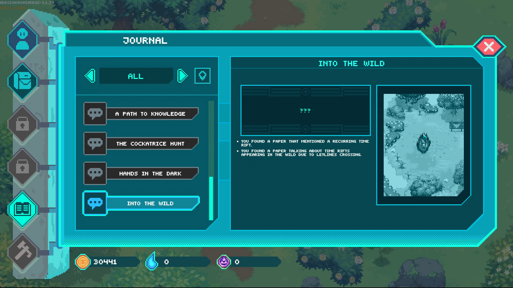
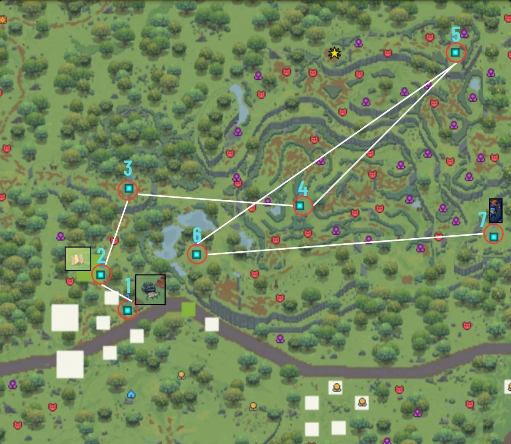
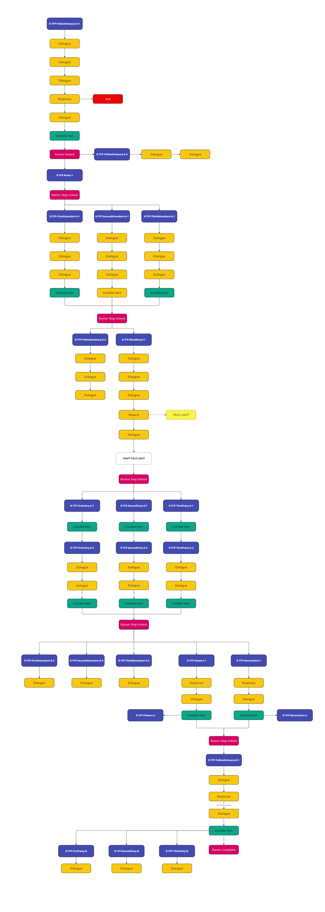
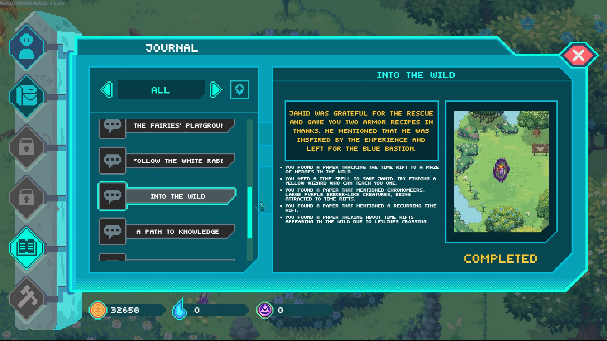

Into the Wild
A quest design case study
“By the Ouroboros, you found me! I was starting to lose hope.”
Overview
“Into the Wild” is an optional exploration quest in Forgotten Runiverse, an open-world MMORPG (read more about my work on this project here). The quest takes place in The Wild, a region defined by untamed magic and dangerous creatures. Players discover a yellow wizard trapped behind a time portal and must find a way to free them.
This case study walks through my design process from initial concept to final implementation, showing how I approached quest design to reinforce core mechanics, reward player curiosity, and build a world that feels alive.
assets/img/into-the-wild-1.jpg
The challenge
Forgotten Runiverse had a few design constraints I needed to work within:
- Limited lore documentation. The IP had broad strokes but not deep detail. I had to create within that space while staying true to the world's tone and rules.
- The game's tutorial was long and text-heavy. Players often forgot core mechanics like crafting, exploration, and the magic color system. I wanted quests to serve as organic reminders without feeling like tutorials.
- Optional content needed to feel worthwhile. Most quests in the game were optional. My goal was to give players reasons to engage with them beyond just XP. I wanted them to see the impact of their choices in the world.
- Stakeholder approval process. Every quest pitch needed approval from the creative director, narrative designer, and the IP owner. Character selection was especially important to the client, who wanted us to feature player-owned NFT characters and community-created lore when possible.
This wasn't my first experience working with IP stakeholders. I'd previously worked with Disney at Jam City on Frozen Adventures, where every piece of content needed brand approval. That experience taught me how to pitch within constraints and iterate based on feedback.
Design philosophy
I approached every quest with a few guiding principles:
- Make the world react to player choices.If a player completes a quest, I want them to see the effects when they return to that area. The world should remember what they did.
- Reinforce mechanics through narrative.Instead of telling players to craft or explore, I designed quests that required them to do it naturally. The story becomes the reason to engage with systems.
- Reward curiosity.Not everything has a quest marker. Players who talk to NPCs, explore off the beaten path, or return to locations after quests should find hidden dialogue, secret rewards, and deeper lore.
- Reuse and repurpose.I'm conscious of how much work every request creates for other teams. If I can give new meaning to an existing asset, item, or character instead of requesting new ones, that's a better design.
The process
-
Research & pitch
I started by understanding what made The Wild unique. This region was defined by wild magic: unpredictable, dangerous, untamed. The area had a Wild Zone (a maze-like section with stronger enemies and better loot) that most players avoided unless they had a reason to enter.
I looked at existing lore and found:
- The game already had time rifts as a concept (used in a dungeon).
- Yellow magic was associated with time manipulation.
- There was a community-created creature that could open small portals.
I pitched the concept: a yellow wizard trapped behind a time portal, researching time rifts. The player would need to find a way to free them using yellow magic. The quest would take players through the Wild Zone, encourage crafting or social interaction, and connect to an earlier quest in a different region.
The pitch was approved by the creative director, narrative designer, and the IP owner (who approved the character selection).
-
Structure & flow
Once approved, I mapped out the quest structure. This map is redrawn for this page from the same structure.
-
Stage 1
Discovery hooks
Paper trailNotes from the wizard scattered in the area.Environmental breadcrumbsPortal-traveling creatures placed along the path.NPC placementThe wizard's friend appears in 3 locations asking “Have you seen my friend? He's a yellow hat, he's never late.” -
Stage 2
Core objective
Find the trapped wizard behind the time portal.Cast a yellow magic spell to stabilize the time portal and free them. -
Stage 3
Multiple solution paths
Ask an earlier NPCIf the player completed the earlier Yellow Hat quest in the first region, they can ask that NPC for the spell recipe. If they haven't, they discover a new yellow hat quest in that region.Check the forgesPlayers can explore forges (player-built crafting stations) to find recipes shared by other players.Explore the regionPlayers can find materials and recipes on their own. I made sure the recipes for the needed spells were included in the loot tables of that region. -
Stage 4
Reward
Recipe for ancient armor, reusing an existing asset that fit the time traveling narrative. -
Stage 5 · no quest marker
The hidden layer
Optional dialogue at the Blue Wizards Academy for players who go back to talk. Details in step 5.only the curious find this
Image slotQuest icon or in-game shotassets/img/into-the-wild-2.jpg
-
Stage 1
-
Interaction design
This was where I spent most of my time. For each interaction, I created:
- Unique ID/code for engine implementation.
- Dialogue flow with branching options.
- Conditions (e.g., “if player has yellow spell equipped, show this option”).
- Item requirements and rewards (discussed and reviewed by other team members in charge of items).
- Draft dialogue establishing tone, flow, and character personality.
I wrote all dialogue drafts, journal entries and item descriptions, which were then reviewed and polished by Jon Olson, the narrative designer. Some stayed as written; others were rewritten for language and tone.
-
Coordination & implementation
- Level designI worked closely with level designers to place the interactable items and NPCs in the world. We chose locations that would require players to travel through enemy territory, naturally exposing them to the Wild Zone's challenges and rewards.
- Art teamI created Jira tickets specifying asset and animation needs. For this quest, most assets were reused: the portal effects from the dungeon, the existing creature models, the ancient armor already in the item database.
- EngineeringI implemented the interactions directly in the engine. Over time, I became the team's go-to for interaction implementation and bug fixing. I also worked with engineers to improve our narrative design tools, making the workflow faster for future content.
- QAI wrote test documentation and worked directly with QA to find and fix bugs, especially interaction-related issues.
Image slotEarly draft of the interaction structureassets/img/into-the-wild-draft.jpg
Early draft of the interaction structure for an open-world quest. Illustrative only: the official document came later and is not shown here. -
The hidden layer
After the quest objective is complete, the wizard reunites with their friend at the Blue Wizards Academy. If the player visits them there, with no quest marker pointing them to do so, they find optional dialogue:
The yellow wizard thanks the player and mentions they sold their research on time rifts to the Blue Wizards (the academic/techno-magic faction), and the player receives a small extra reward for their help.
This interaction has no quest marker. No objective. It exists purely to reward players who stay curious, who talk to NPCs after quests are “done.” It also reinforces the world-building: different wizard factions collaborate, research has value, the world keeps moving even after the player's involvement ends.
Image slotImage from the hidden layer sectionassets/img/into-the-wild-3.jpg
Key design decisions
- Three ways to solve itThe spell recipe can come from an earlier quest NPC, from recipes other players share at forges, or from exploring. The recipes sit in the region's loot tables, so the quest can always be finished.
- Reuse before requestingMost assets were reused: the portal effects from the dungeon, the existing creature models, and the ancient armor already in the item database.
- Connect to an earlier questThe quest builds on the Yellow Hat quest in the first region. Players who skipped it find a new one when they arrive.
- A reward with no markerThe dialogue at the Blue Wizards Academy exists only for players who keep talking to NPCs after the quest is done.
assets/img/into-the-wild-decisions.jpg
What I learned
- Small quests can carry big ideas. “Into the Wild” is optional content, but it reinforces core mechanics, connects regions, rewards exploration, and builds world lore. Scope doesn't determine impact.
- Constraints breed creativity. Limited lore meant I had to find meaning in what existed.
- Design for the curious player. Not everyone will find the hidden dialogue. That's okay. The players who do will feel like the world has depth, and that feeling spreads through communities.
- Process matters. Clear pitches, structured documentation, and close collaboration with level design, art, QA, and engineering made implementation smoother. I also contributed to improving our tools and workflows, which made future content faster to produce.
Tools and credits
- Proprietary engine (interaction implementation)
- Confluence (documentation)
- Miro (flow mapping)
- Jira (tickets and coordination)
- Google Sheets/Docs (design specs, dialogue drafts)
- Quest design & implementationSantiago Mejias
- Narrative designJon Olson
- Level designThomas Guana
- Creative directionTanilo Errazuriz
“Santiago is one of the best game designers I know. At every decision point he considers player experience and how each action integrates into the larger experience. He's also highly organized, a real wizard with a spreadsheet, and good at developing clear communication between departments.”